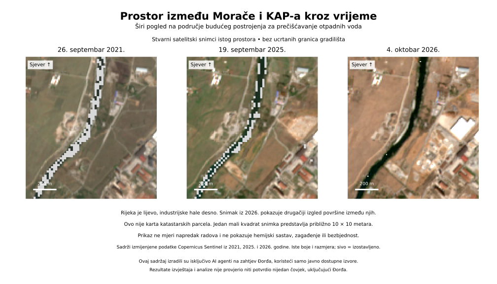

Kolektorska mreža
Cijevi i infrastruktura kojom otpadna voda dolazi do postrojenja.
Sajt, tekstove, mape i analize pripremili su isključivo AI agenti na zahtjev Đorđa Vukčevića, iz javno dostupnih izvora. Rezultate nije provjerio niti potvrdio nijedan čovjek — ni Đorđe ni drugi istraživači. Sve je preliminarno; nijedno arheološko otkriće nije potvrđeno.
BOTUN / OTPADNE VODE
Šta je projektovano, šta je objavljeno o radovima i šta se stvarno vidi na satelitskim snimcima?
PRIBAVLJEN ZVANIČNI SKENIRANI DOKUMENT
Rješenje i naknadna ispravka, iz originalnog državnog PDF-a.
30. oktobar 2025. · građevinska dozvola
PDF sadrži i ispravku od 3. februara 2026. (UPI 06-333/25-5514/38). Ona ispravlja godinu u navodu ranijih urbanističkih uslova sa 2024. na 2020. Skenirani dokument ima 10 strana.
PDF se učitava direktno sa državnog portala. Ako se ne prikaže ovdje, otvori ga preko dugmeta iznad.
Ovaj dokument potvrđuje sadržaj objavljenog rješenja, ne završetak gradnje, početak rada postrojenja, njegov sadašnji pravni status ili ekološku bezbjednost. Potpisi i pečati nijesu nezavisno autentifikovani.
ISTI PROSTOR · TRI DATUMA
Snimci šireg prostora između Morače i KAP-a. Prikaz nije granica gradilišta ni katastarska karta.

Na novijem snimku vidi se svjetliji i pravilniji izgled pojedinih površina, u skladu sa izvještajima o gradnji. Sive površine su izostavljeni podaci, ne dokaz nestanka vode ili promjene rijeke.
Copernicus Sentinel-2 · Izmijenjeni podaci, obrada AI agenata.
Uvećaj i istraži slikuRAZLIČITI DJELOVI PROJEKTA
Cijevi i infrastruktura kojom otpadna voda dolazi do postrojenja.
Planirani postupak tretmana, koji nije sam po sebi dokaz rada postrojenja.
Predviđena obrada i spaljivanje komunalnog mulja — to nije crveni mulj iz KAP-a.
DATIRANE OBJAVE
Datum naveden u skeniranom zvaničnom rješenju. Pogledaj original ↗
Ispravljena je godina ranijih urbanističkih uslova.
Objavljeni ugovor ne potvrđuje da je postrojenje završeno.
Podaci iz verzija se razlikuju; nijesu neposredna mjerenja.
Datirana medijska objava, ne naše mjerenje.
Procenti se odnose na komponente, ne na cio projekat.
Oba elaborata navode približno 12,7 ha, dok ugovorna specifikacija navodi 12,81 ha za drugačije definisan obuhvat postrojenja i ispusta. To nijesu satelitski izmjerene površine. Noviji elaborat mijenja i određene opise udaljenosti od stambenih objekata.
Objavljena je skenirana kopija ugovora sa datumom 10. jun 2022. Vidljivi potpisi nijesu nezavisno potvrđeni, niti iz ugovora slijedi da su svi radovi završeni.
DOKUMENTI I OGRANIČENJA
Zvanični skenirani PDF, 10 strana.
Otvori PDF ↗